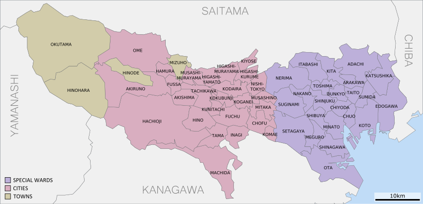

Tokio i (jap. 東京都 Tōkyō-to) – stolica i największe miasto Japonii, położone na południowo-wschodnim wybrzeżu Honsiu i zarazem największy obszar metropolitalny na świecie na poziomie 38 305 000 mieszkańców (stan na kwiecień 2018). Nazwa Tōkyō (jap. 東京)
oznacza „Wschodnią Stolicę”. Do 1868 roku miasto nazywało się Edo
Tokio formalnie nie jest miastem, ale prefekturą metropolitalną od 1 lipca 1943. Zostało zniszczone przez trzęsienie ziemi w 1923, a także przez amerykańskie bombardowania w maju 1945 (podczas II wojny światowej). Było również organizatorem letnich igrzysk
olimpijskich w 1964 i będzie ponownie w 2021.
Znajdują się tutaj: Tokyo Skytree, Pałac Cesarski, zabytkowe świątynie buddyjskie, chramy shintō, muzea, obiekty kultury, parki. Tokio jest siedzibą jednej z głównych giełd świata i rekordowej liczby dużych firm.
W 2018 Tokio odwiedziło 12,12 mln turystów z całego świata – było dziewiątym najczęściej odwiedzanym miastem na świecie
Tōkyō-to jest odrębną jednostką w podziale administracyjnym kraju, co jest zaznaczone znakiem 都 (wymawianym to) oznaczającym „stolicę” lub „metropolię” i w języku angielskim tłumaczone jako Tokyo Metropolis lub Tokyo Metropolitan Prefecture, czyli Tokijska
Prefektura Metropolitalna. Władze miasta wyróżniają w niej trzy obszary: 23 dzielnice, region Tama oraz wyspy.
Metropolia stołeczna Tokio leży w regionie Kantō, na największej japońskiej równinie, na wyspie Honsiu, u ujścia rzeki Sumida do Zatoki Tokijskiej. Współrzędne geograficzne centralnej części miasta to: 35°41′ szerokości geograficznej północnej i 139°46′
długości geograficznej wschodniej.
Obszar prefektury Tokio pocięty jest rzekami. Sumida jest historycznym korytem rzeki Ara, która od II ćw. XX w. ma sztucznie wykonane, alternatywne koryto do Zatoki Tokijskiej, omijające obszar centralny miasta. Na wschodzie płyną rzeki Naka oraz Edo.
Ta ostatnia jest wschodnią granicą miasta (na odcinku południowym, gdzie przekopano alternatywne koryto do Zatoki, stary ciek nosi nazwę Kyū-Edo. Głównym ciekiem zachodniej części obszaru jest rzeka Tama, będąca na znacznej długości
południową granicą miasta.
Wschodnia część miasta leży na płaskim, a na wschód od Sumidy wręcz podmokłym terenie, podczas gdy zachodnia – na terenie lekko pofalowanym, z widocznymi dolinami i płytkimi wąwozami dawnych rzek. Jest to wschodni skraj wyżyny Musashino, ciągnącej się
na zachód, aż po góry oddzielające ją od ko tliny dawnej prowincji Kai. Góry zajmują duży obszar prefektury. Ich zbocza są strome i zalesione (lasem pokryte jest 36% obszaru Tōkyō-to). Najwyższym sz czytem jest Kumotori o wysokości
2017 m n.p.m. Na terenie stołecznej prefektury znajdują się także inne szczyty, m.in.: Takanosu (1737 m n.p.m.), Ōdake (1267 m n.p.m.), czy otoczone szczególnym kultem Mitake (929 m n.p.m.) i Takao (599 m n.p.m.). Wysoko w górach na
rzece Tamie znajduje się największe jezioro na ter enie prefektury – sztuczny zbiornik Okutama-ko.
Podział administracyjny

Obszar 23 dzielnic
Większość współczesnych dzielnic powstała w 1947 z połączenia mniejszych dzielnic miasta Tokio. Poniżej podano także dawne nazwy ze względu na ich znaczenie historyczne.
Dzielnice obecne, położone głównie na obszarze miasta w granicach sprzed 1932:
Bunkyō
Chiyoda
Chūō
Kōtō
Minato
Shinjuku
Taitō
Transport
Kliknij na przyciski aby dowiedzieć się więcej:
Morski
Port handlowy, zarządzany przez prefekturę, ma nabrzeża łącznej długości 2,64 km, ok. 1 km² odkrytej powierzc hni magazynowej, dostępnej publicznie oraz ok. 0,2 km² hal magazynowych[25]. W 2005 obsłużono 32 180 statków i przeładow ano 92 mln ton ładunków,
z czego połowę w handlu międzynarodowym (trzecie miejsce w kraju). Specyfiką portu jest wielki u dział transportu kontenerowego (93% tonażu) oraz przeładunek towarów wysokiej wartości. Instalacje portu występują na wielu szt ucznych
wyspach: Yashio, Jōnan, Hinode, Aomi, Ariake. Funkcje portowe wymuszają budowę powiązań między wyspami w postaci wysokich m ostów lub tuneli (tych drugich na kanałach portowych jest większość). Dla obsługi części portu leżącego
w południowych dzielnicach mia sta poprowadzono specjalną linię kolei Tōkaidō Kamotsu, od strony dworca towarowego Kawasaki przebiegającą tunelem pod basenami portowymi. Obsługą statków zajmują się ponadto inne porty Zatoki Tokijskiej
w Jokohamie, Kawasaki i Chibie.
Drogowy
Na węzeł ponadregionalnej komunikacji drogowej składa się przede wszystkim system autostrad. Tokio jest punktem zbiegu następujących autostrad międzyregionalnych: Tōmei (kierunek Nagoja, Kansai), Chūō (Matsumoto, Nagano), Kan’etsu (Nagaoka), Tōhoku (Sendai),
Jōban (Mita). Ponadto do autostrad państwowych zalicza się trasę regionalną do Jokohamy, trasę do Chiby i dalej wschodnim wybrzeżem zatoki oraz trasę do lotniska Narita i dalej na wybrzeże Pacyfiku (Kashima). Zalicza się też przeprawę
mostowo-tunelową przez Zatokę Tokijską – Tokyo Wan Aqua-Line. Autostrady państwowe docierają do granic „23-ku”, skąd ruch przejmuje sieć miejskich dróg ekspresowych. Tam też znajdują się odcinki nieukończonego zewnętrznego pierścienia
autostradowego. W Tokio zbiega się także 14 dróg krajowych.
Kolejowy
W tokijskim węźle kolei sieci krajowej (JR) zbiegają się cztery normalnotorowe linie wysokich prędkości Shinkansen: Tōkaidō, Tōhoku, Jōetsu, Nagano. Punktem końcowym wszystkich tych linii jest dworzec Tōkyō. Trzy ostatnie wchodzą do miasta wspólną trasą
od dworca Ōmiya w mieście Saitama, pociągi zatrzymują się także na dworcu Ueno. Tōkaidō Shinkansen ma natomiast dodatkowy dworzec Shinagawa. Klasyczna sieć wąskotorowa JR ma linie magistralne: Tōkaidō (obsługuje ją dworzec Tōkyō),
Chūō (obsługa przez dworzec Shinjuku), Tōhoku, Jōetsu oraz Jōban-sen (wszystkie trzy obsługiwane przez dworzec Ueno). Całość sieci kolei krajowej obsługiwana jest przez kolej JR Higashi Nihon, z wyjątkiem linii Tōkaidō Shinkansen,
eksploatowanej przez JR Tōkai.